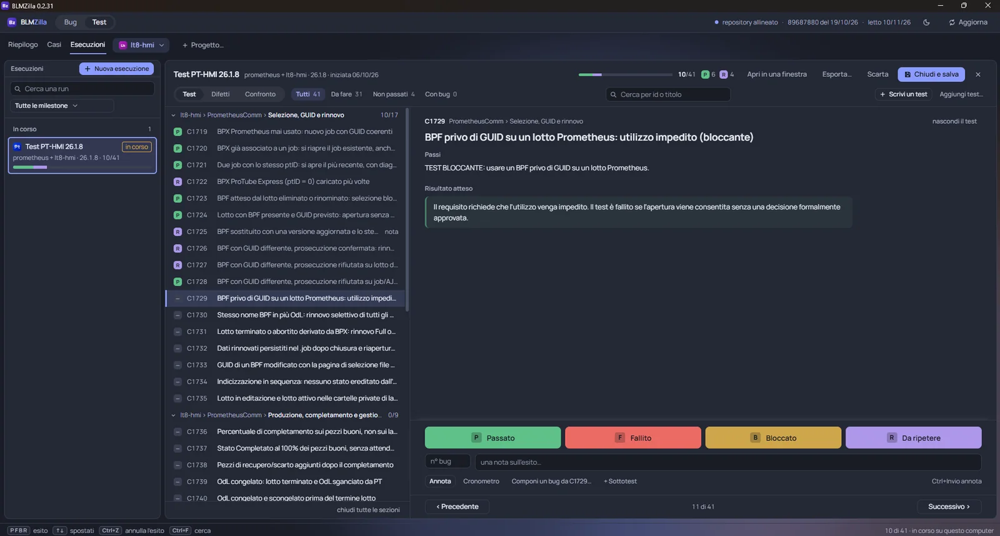

BLMZilla
A desktop app for our internal Bugzilla server that also manages test cases. It replaced the old bug-tracking client and a paid test-management licence, and put both jobs in one window.
My part: requirements, direction, testing and rollout to the team.
